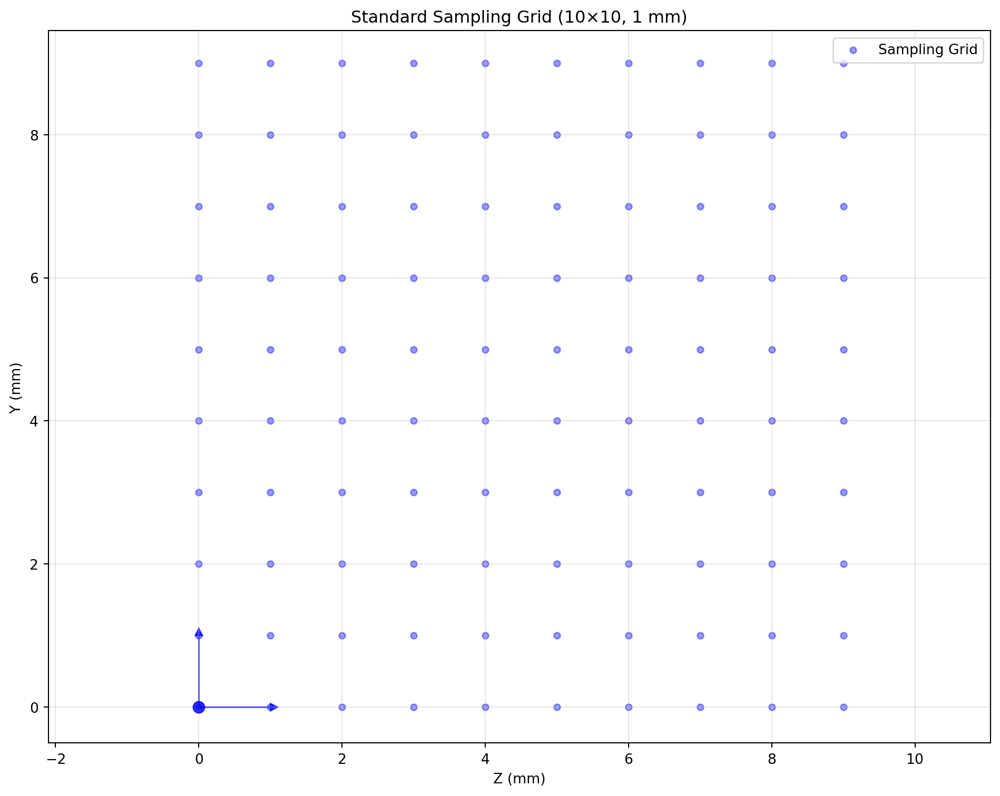
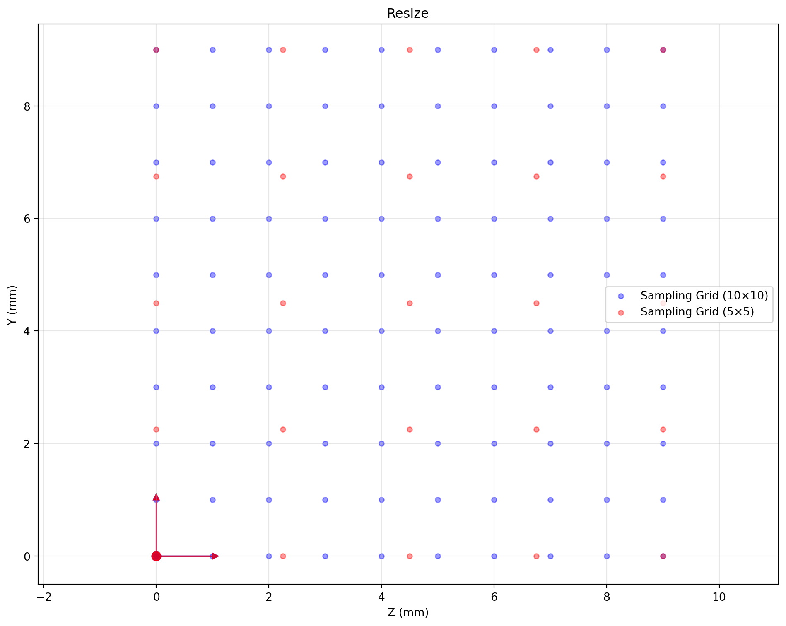
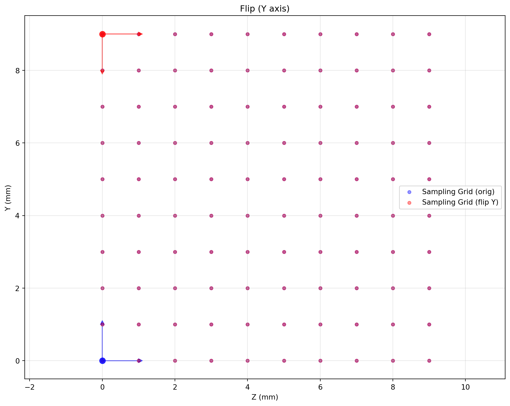
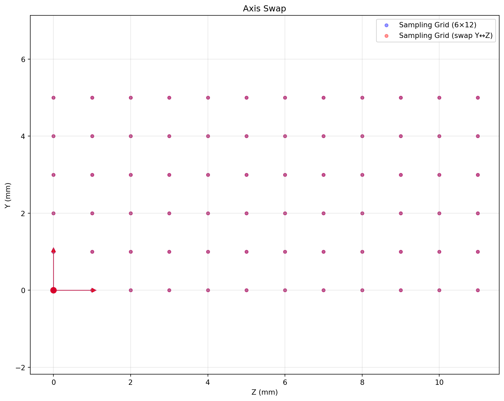
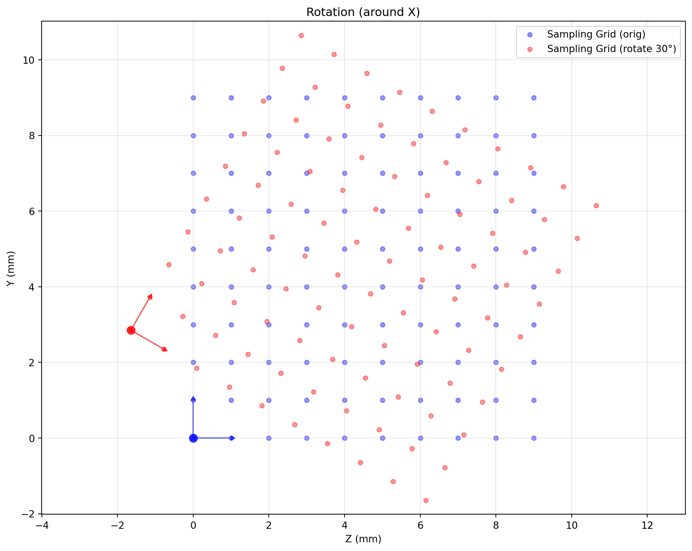
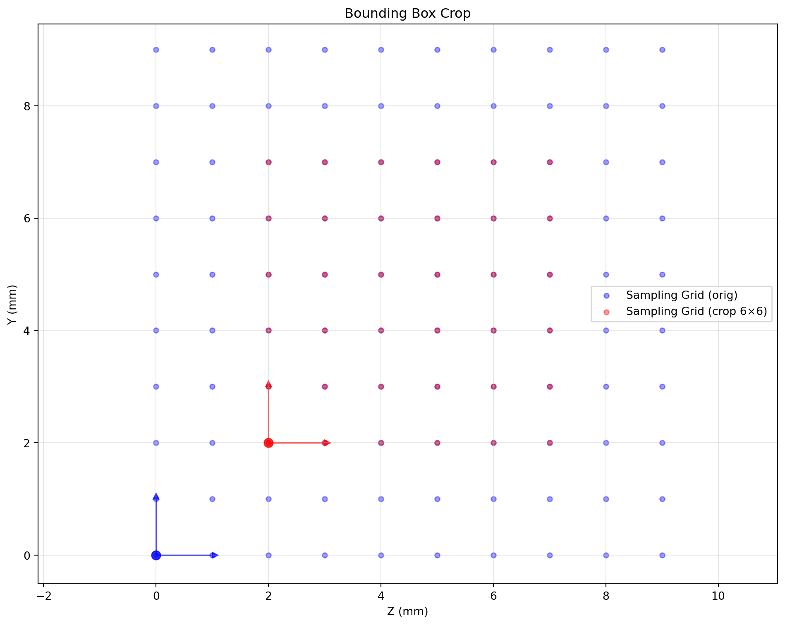
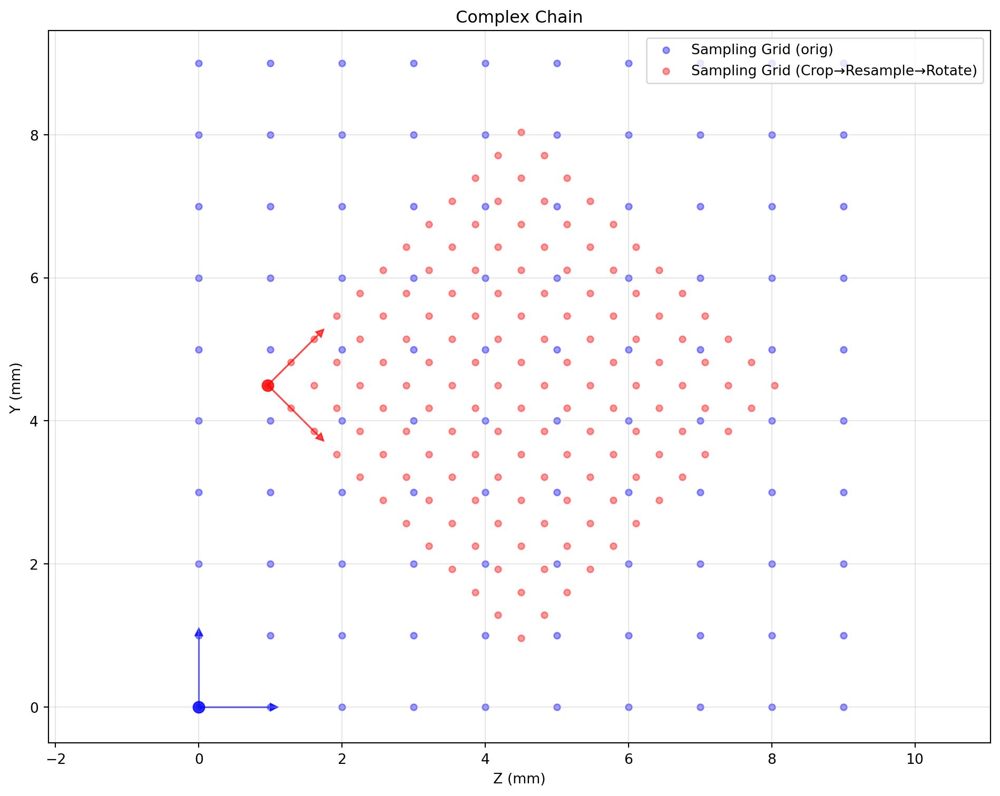
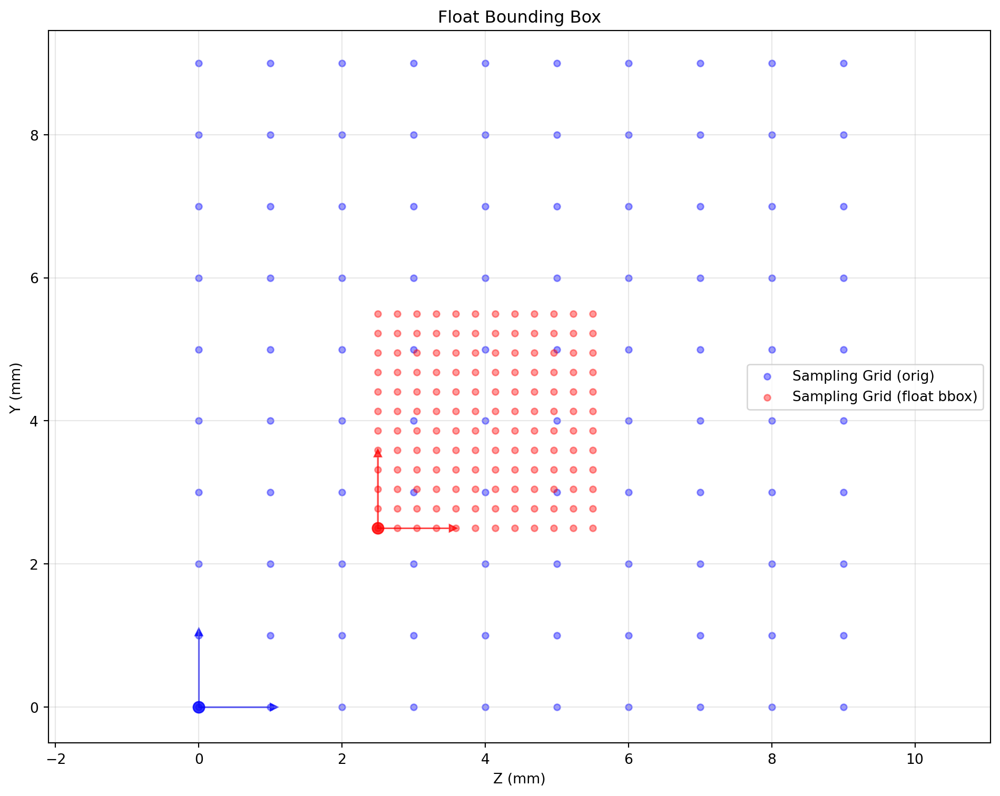

import numpy as np
import matplotlib.pyplot as plt
from spacetransformer.core import Space
standard_space = Space(
shape=(1,10,10),
origin=(0.0,0.0,0.0),
spacing=(1.0,1.0,1.0),
x_orientation=(1.0,0.0,0.0),
y_orientation=(0.0,1.0,0.0),
z_orientation=(0.0,0.0,1.0)
)Space Fundamentals
Space: Complete 3D Geometry
Space objects describe the sampling grid via shape, origin, spacing, and three orientation vectors.
Helper to visualize Y–Z slices of the sampling grid.
def visualize_sampling_grid(space, color='blue', show_axes=True, label_suffix=''):
shape_yz = space.shape[1:3]
y_idx, z_idx = np.meshgrid(np.arange(shape_yz[0]), np.arange(shape_yz[1]), indexing='ij')
index_points = np.stack([
np.zeros_like(y_idx.flatten()),
y_idx.flatten(),
z_idx.flatten()
], axis=1)
world = space.to_world_transform.apply_point(index_points)
plt.scatter(world[:,2], world[:,1], c=color, alpha=0.4, s=20, label=f'Sampling Grid{label_suffix}')
if show_axes:
origin_world = space.to_world_transform.apply_point([[0,0,0]])[0]
plt.plot(origin_world[2], origin_world[1], 'o', color=color, markersize=8, alpha=0.8)
axis_len = 1
y_end = origin_world[1:3] + np.array(space.y_orientation[1:3]) * axis_len
plt.arrow(origin_world[2], origin_world[1], y_end[1]-origin_world[2], y_end[0]-origin_world[1],
head_width=axis_len*0.1, head_length=axis_len*0.1, fc=color, ec=color, alpha=0.7)
z_end = origin_world[1:3] + np.array(space.z_orientation[1:3]) * axis_len
plt.arrow(origin_world[2], origin_world[1], z_end[1]-origin_world[2], z_end[0]-origin_world[1],
head_width=axis_len*0.1, head_length=axis_len*0.1, fc=color, ec=color, alpha=0.7)
def setup_plot(figsize=(10,8)):
plt.figure(figsize=figsize)
def finalize_plot(title):
plt.xlabel('Z (mm)'); plt.ylabel('Y (mm)'); plt.title(title)
plt.grid(True, alpha=0.3); plt.axis('equal'); plt.legend(); plt.tight_layout(); plt.show()
setup_plot()
visualize_sampling_grid(standard_space)
finalize_plot('Standard Sampling Grid (10×10, 1 mm)')
Transform Examples
Shape (Resize)
high_res = standard_space.apply_shape((1,20,20))
low_res = standard_space.apply_shape((1,5,5))
setup_plot(); visualize_sampling_grid(standard_space, 'blue', label_suffix=' (10×10)')
visualize_sampling_grid(low_res, 'red', label_suffix=' (5×5)')
finalize_plot('Resize')
Flip
flipped = standard_space.apply_flip(axis=1)
setup_plot(); visualize_sampling_grid(standard_space, 'blue', label_suffix=' (orig)')
visualize_sampling_grid(flipped, 'red', label_suffix=' (flip Y)')
finalize_plot('Flip (Y axis)')
Axis Swap
rect_space = Space(shape=(1,6,12), origin=(0,0,0), spacing=(1,1,1),
x_orientation=(1,0,0), y_orientation=(0,1,0), z_orientation=(0,0,1))
swapped = rect_space.apply_swap(1, 2)
setup_plot(); visualize_sampling_grid(rect_space, 'blue', label_suffix=' (6×12)')
visualize_sampling_grid(swapped, 'red', label_suffix=' (swap Y↔Z)')
finalize_plot('Axis Swap')
Rotation
rotated = standard_space.apply_rotate(axis=0, angle=30, unit='degree', center='center')
setup_plot(); visualize_sampling_grid(standard_space, 'blue', label_suffix=' (orig)')
visualize_sampling_grid(rotated, 'red', label_suffix=' (rotate 30°)')
finalize_plot('Rotation (around X)')
Bounding Box Crop
crop_bbox = np.array([[0,1],[2,8],[2,8]])
cropped = standard_space.apply_bbox(crop_bbox)
setup_plot(); visualize_sampling_grid(standard_space, 'blue', label_suffix=' (orig)')
visualize_sampling_grid(cropped, 'red', label_suffix=' (crop 6×6)')
finalize_plot('Bounding Box Crop')
Complex Transform Chain
complex_target = (standard_space
.apply_bbox(np.array([[0,1],[2,8],[2,8]]))
.apply_shape((1,12,12))
.apply_rotate(axis=0, angle=45, unit='degree'))
setup_plot(); visualize_sampling_grid(standard_space, 'blue', label_suffix=' (orig)')
visualize_sampling_grid(complex_target, 'red', label_suffix=' (Crop→Resample→Rotate)')
finalize_plot('Complex Chain')
Float Bounding Box Sampling
float_bbox_space = standard_space.apply_float_bbox(np.array([[0,1],[2.5,5.5],[2.5,5.5]]), (12,12,12))
setup_plot(); visualize_sampling_grid(standard_space, 'blue', label_suffix=' (orig)')
visualize_sampling_grid(float_bbox_space, 'red', label_suffix=' (float bbox)')
finalize_plot('Float Bounding Box')
Why Space-Centric Design?
Traditional “transform-centric” APIs (e.g., torchvision) provide relative transforms. SpaceTransformer is “space-centric”: every object (image, mask, points) carries an absolute Space descriptor. Aligning two objects means comparing spaces and deriving the needed transform automatically.
Planning vs Execution
- Planning: chain methods on
Space(apply_shape,apply_bbox,apply_rotate, …) to describe the desired geometry without touching data. - Execution:
warp_image,warp_point, etc., analyze the chain and perform one optimized resample.
Benefits
- Geometric accuracy: transform order (resize→rotate vs rotate→resize) yields the same result; avoids sampling artifacts.
- Memory efficiency: no intermediate arrays; only final output is allocated.
- Simpler architecture: one
warp_*family handles images, masks, points without bespoke logic per type. - Ease of use: declarative API, yet advanced users can still access low-level controls.